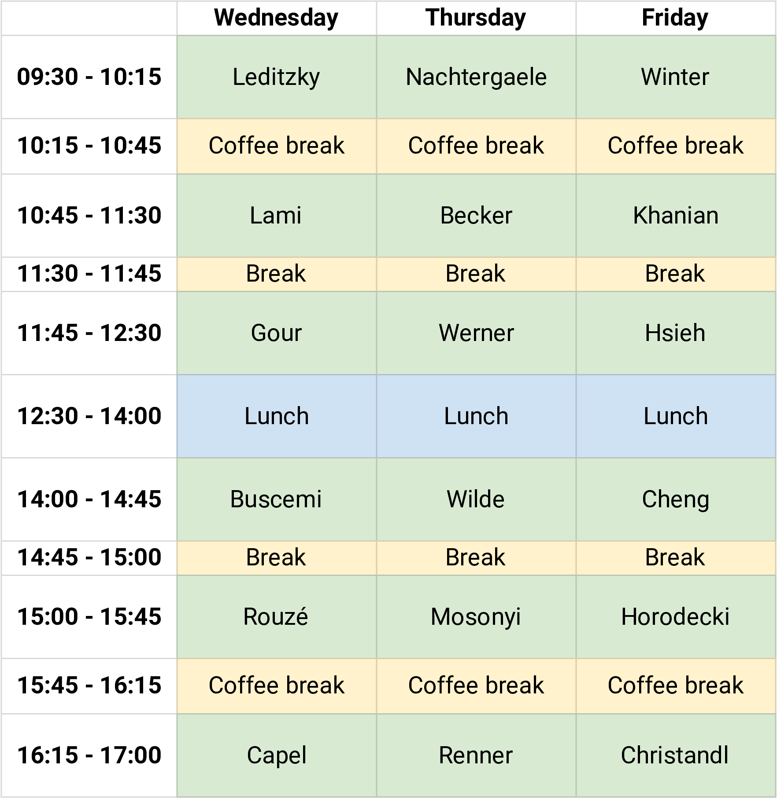
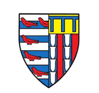
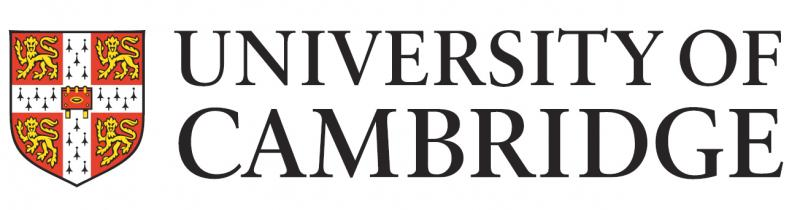

Overview
- Where: Centre for Mathematical Sciences, University of Cambridge, Lecture room MR2
- When: August 14 to 16, 2024
- Organizers:
- Felix Leditzky (University of Illinois Urbana-Champaign; email)
- Mark Wilde (Cornell University; email)
- Local contacts:
- Workshop secretary: Zvezda Petrova-Woodhouse (email)
Participants
- Becker, Simon
- Bergh, Bjarne
- Bowen, Garry
- Buscemi, Francesco
- Capel, Ángela
- Cheng, Hao-Chung
- Chiew, Mitchell
- Christandl, Matthias
- Cudby, Josh
- Datta, Nilanjana
- Dorlas, Tony
- Fawzi, Hamza
- Gondolf, Paul
- Gour, Gilad
- Hanson, Eric
- Hirche, Christoph
- Horodecki, Pawel
- Hsieh, Min-Hsiu
- Jozsa, Richard
- Kent, Adrian
- Khanian, Zahra Baghali
- König, Robert
- Lami, Ludovico
- Leditzky, Felix
- Matthews, Will
- Mosonyi, Milan
- Moulik, Subhayan Roy
- Nachtergaele, Bruno
- Noormandipour, Mohammadreza
- Ozols, Maris
- Payne, Mike
- Regula, Bartosz
- Renner, Renato
- Rouzé, Cambyse
- Salek, Farzin
- Salmon, Wilfred
- Salzmann, Robert
- Scalet, Samuel
- Singh, Satvik
- Strelchuk, Sergii
- Studzinski, Michal
- Verstraete, Frank
- Werner, Reinhard
- Wilde, Mark
- Winter, Andreas
Scientific program
Download the Book of abstracts.

Wednesday, August 14
Morning session (Chair: Robert König)
- Felix Leditzky: On the duality of teleportation and dense coding
- Ludovico Lami: A solution of the generalised quantum Stein’s lemma
- Gilad Gour: Quantum Additivity Implies Negativity
Afternoon session (Chair: Frank Verstraete)
- Francesco Buscemi: Squashed information backflows in non-Markovian quantum stochastic processes
- Cambyse Rouzé: Quantum information perspectives on Gibbs sampling
- Ángela Capel: Conditional Independence of 1D Gibbs States with Applications to Efficient Learning
Thursday, August 15
Morning session (Chair: Robert Salzmann)
- Bruno Nachtergaele: Analysis of quantum states of matter by classical statistical mechanics
- Simon Becker: Convergence rates for the Trotter-Kato splitting
- Reinhard Werner: Quantum gases via the Fredholm determinant
Afternoon session (Chair: Bjarne Bergh)
- Mark Wilde: Barycentric bounds on the error exponents of quantum hypothesis exclusion
- Milan Mosonyi: Super-exponential distinguishability of correlated quantum states
- Renato Renner: Almost-IID information theory
Friday, August 16
Morning session (Chair: Maris Ozols)
- Andreas Winter: Hidden Markov models - classical and quantum mechanisms, and beyond
- Zahra Khanian: Quantum Reverse Shannon Theorem Revisited
- Min-Hsiu Hsieh: Constant-Overhead Magic State Distillation
Afternoon session (Chair: Satvik Singh)
- Hao-Chung Cheng: Joint State-Channel Decoupling
- Paweł Horodecki: Unbounded quantum advantage. An instance with low number of inputs
- Matthias Christandl: Quantum Communication with Noisy Devices
Theme of the symposium
The theme of this symposium is the study of quantum mechanical systems through the lens of information theory and mathematical physics. Particular focus will be on the finite blocklength regime of information-processing tasks and mathematical characterisations of the dynamics of finite-dimensional and continuous-variable quantum systems. The symposium will bring together both early-career and established scientists working at the forefront of these research topics. The schedule of the symposium is designed with a focus on collaboration, combining talks by selected participants with ample time for discussions and open problem sessions that will facilitate new connections among participants and introduce novel research directions in quantum information theory.
↑ back to topSponsors


for a Sustainable Society